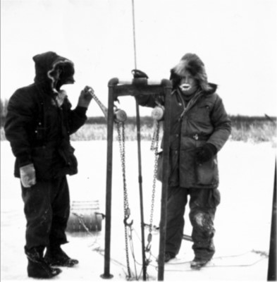

A Coring Expedition
by Tom Shay
Bone-chilling winds whipped across the frozen pond as the two of us drilled through the thick ice with a hand-held auger. The leader of our little expedition was Dr Herbert Wright, then the director of the University of Minnesota’s Limnological Research Center. As a raw graduate student, I felt fortunate to work with such an experienced field researcher (by the early 1960s, Dr. Wright had cored a dozen lakes in Minnesota and elsewhere). But the weather was far from ideal. It was so cold that Dr Wright’s beard had turned white with frost. We looked like Arctic explorers, our breath forming crystals on our eyelashes and the fringes of our parkas. I still shudder whenever I think back to that freezing January day in 1961.

The effort was strenuous so we took turns cranking the auger. Its spoon-shaped blade made a crackling sound as it drilled through the crystal-clear ice. The blade finally poked through the thick mass as steam rose from the water below. Sigh of relief. We could now proceed with our mission.
Our mission was to collect a core of bottom mud from the pond for pollen analysis and radiocarbon dating. The mission seemed laudable but why choose a frigid Sunday in January? Why were we braving such weather in order to collect lake mud when, months later, we could have returned in shirtsleeves? The answer is simple. Stability. Anyone who has tried to collect a core from a bobbing boat knows how difficult it is. Years of experience show that lake cores are best obtained from a stable platform. In open water you could use a pontoon but there is no more stable platform than an ice surface. In spite of the weather, the ice offered us the platform we needed. Nevertheless, we could have chosen a warmer weekend.
Once the auger had poked through the ice, we inserted our coring tube into the hole. This was the first step in collecting mud from the small pond we named Qually after the property owners. We used a piston sampler, developed by the distinguished paleolimnologist Dan Livingstone. Our Livingstone corer resembled an outsized hypodermic syringe, consisting of a long, hollow steel tube about the diameter of a fist, with an inner rubber piston inside. The piston rose up the tube as mud entered the bottom. To lower and raise it out of the water, we attached lengths of lead pipe to the top of the tube. Because our muscle-power was not up to the job, we pushed and pulled the corer in and out with the aid of a metal frame and two chain hoists.
To begin, we lowered the sampler through the water and pushed it into the mud until we had filled the tube. Then we hoisted the sampler out of the water, laid it on the ice, and used the rubber piston to push out the dark organic-rich “sausage” onto a stout piece of aluminium foil. I wrapped the segment and taped it closed, using a felt tip marker to write its depth range and an arrow pointing to the top of the segment. We continued to add additional sections of lead pipe for subsequent drives until we hit sand, signalling we had reached the bottom.
When we laid the last segment on the ice, we couldn’t push out the core inside. The mud had frozen solid in the tube. After some discussion, we collected our gear, trudged back to Dr Wright’s battered station-wagon and drove in search of a garage where we could thaw the frozen tube. We finally found someone willing to help us. A few minutes later, we watched while the overall-clad mechanic played his blowtorch over the frozen tube, slowly warming it enough for us to push out its muddy contents. After wrapping and labelling it, we transferred our precious cargo onto the long, wooden tray with the other core samples for the ride back to Minneapolis. To add to our day’s adventures, on the way home the old car’s heater failed, forcing me to hunch in my seat and wiggle my toes inside my boots to keep warm. But, I didn’t mind the cold—I was busy planning how to begin my pollen study!
Although hand corers are still being used for collecting lake mud, today’s coring devices are far more sophisticated. Modern corers are capable of obtaining 70 mm cores in plastic liners up to 14 m long from water depths greater than 30 m.